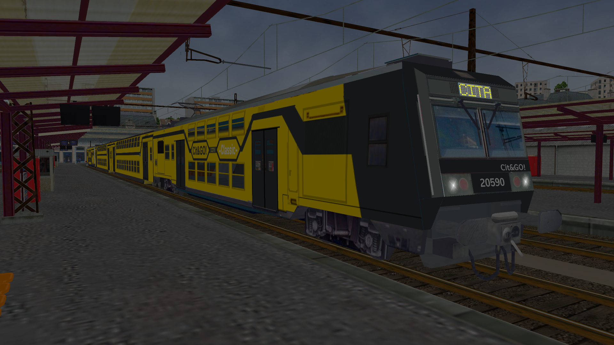

Bienvenue chez Cit&GO !
Du local à l'internationnal, nous créons tous types de relations ferroviaires, pour mieux vous servir au quotidien.
Vous retrouverez sur ce site toutes les informations pour vos prochains voyages ! Cela inclus les trajets, les prix, les prochains départs et arrivées ainsi que certains extras, comme le matériel roulant utilisé et l'infotrafic en direct.